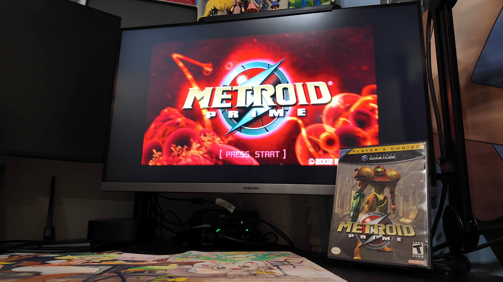

1game1week - Week 35 (8/27/25) - Metroid Prime
Hey all! It's week 35! (8/27 -> 9/3)
Bit of a busy week, but... we move.
Actually, it's been a bit of a busy day. Woke up, took my dog out for a walk, stared blankly at the sky thinking the day wouldn't have any minor inconveniences. Boy was I wrong.
Getting back to my apartment, I notice there are a few ants around. Not the biggest deal... until I see a big old line of them. Sigh...
So I trace them down. They're coming from under the floorboards under my washing machine. On the second floor. So these ants decided, "these dog treats kinda bussin" and climbed an entire second floor and broke through the floorboards just to try to get some.
I guess I've been slacking with my cleaning a bit. Mostly left mopping and vacuuming up to robots... up until one of them broke a little while back. A little plastic piece in the tank that holds the water, which secures it to the main unit. The manufacturer didn't have any others.
Thankfully... if I ship it back to the manufacturer, they'll send me a new one. I don't really have a box that'll fit something like this so I'll have to see how it all turns out in the end.
Cleaned everything top to bottom today and it's all nice and tidy. While cleaning the sinks in the bathroom I ended up breaking off the thing in the back of the faucet that plunges the stopper up and down. Great...
Anyways, I haven't seen many ants around here. Most of them live in a trash bag that I dumped them into after vacuuming them up.
If you'll believe it, what I mentioned last week (post) about not buying things ended up going well. It's certainly frustrating seeing really great deals and having to pass them up, but... well. I'm sure I'll find great deals when I go to Japan next year.
Last time, I asked for you guys to wish me luck. If you mentally did so, thank you. It worked, at least a bit.
Anyways!
New games from 8/20 -> 8/26:
None! (Total 11)
Currently, my backlog is at +12 (lower is better, -1 from last week).
And onto 1g1w. Once again, a game is considered "beaten" if I've accomplished the main objective of the game.
GAME: Metroid Prime
PLATFORM: GameCube
GENRE: Action Adventure
STARTED ON: 8/17
BEATEN ON: 8/23
TOTAL PLAYTIME: 9 hours and 50 minutes (tracked via in-game timer)
This game... aged.
I'm not gonna sit here and pretend that it's not good. I enjoyed my time with Metroid Prime, and it's been loooong overdue for me to play this game. Some aspects of it just very much aren't what I would look for in a game, being used to modern standards.
The thing that comes to mind most is being able to control where Samus is looking and aiming, which is a problem that's exacerbated by the L-targeting not really being the snappiest or best thing to handle. This game isn't necessarily something like an FPS, but I feel its gameplay would be a whole lot smoother if the C-stick had been given the function of the R button (which is free-aim). With this change, you'd also be able to aim while shooting which would be really cool.
All that is not to say that it bogged down the experience, it just would've felt a lot smoother. While talking about this particular gripe to a few friends of mine, I've been told that the Wii version or the Switch versions have a "fix" for this, which is nice. While both of them told me I should probably play on Switch, this game has been in my library for over 20 years (although a good chunk of that time, it was actually my brother's...)
Also, if I decided to play Metroid Prime 2, for example, which has also been in my library for 20 years, it would feel a lot better to start with the original on GameCube, get used to its controls, and just play 2 without becoming spoiled with the fixes from the Remastered version.
A pretty large gripe that I had was also mostly backtracking, and although that seems to be decently common for Metroidvanias, in truth, I've never... actually played a Metroidvania. This is my first time. So taking 10-15 minutes to go from one end of the map to the other was always a little bothersome. Especially in areas that required platforming, which, due to not being able to look around and move at the same time, meant that jumping blind and falling down was a very big possibility.
Which leads me to... whoever greenlit the platforming in this game, I just wanna talk.
Some of the things that I really enjoyed was that combat felt very engaging. Sometimes even more so when trying not to fall in a platforming section and having random flying Space Pirates coming at me.
Exploration, while it did kind of get bogged down by the whole "I need to go to this location for the fifth time?" backtracking, was really engaging. The game made me feel sort of smart when noticing bombable walls or different places to go or secrets in the rooms, etc.
Bosses were really fun, and figuring out how to fight them off was really rewarding.
Also... man, the way the OST brings out the ambiance in each area is phenomenal. This game does a fantastic job of using all its resources to make you feel immersed, from sound design, to music, to its visuals. While touching on them, even if I'm using a pretty beefy setup (RetroTINK + Carby), this game legitimately looks gorgeous, even 20 years later.
I realize that some of my misgivings with the game are either skill issues, so I'll say once again that I legitimately enjoyed Prime a lot and I'm looking forward to playing 2... and 3... at some point.
I finished the game at what the game tracks to be 56% completion, so while there's still plenty of game... I'm not all that likely to go back to that 44%, but... maybe someday!

Thanks for reading! If you need to contact me for any reason, please feel free to email me at aru@hoshikawa-aru.com.